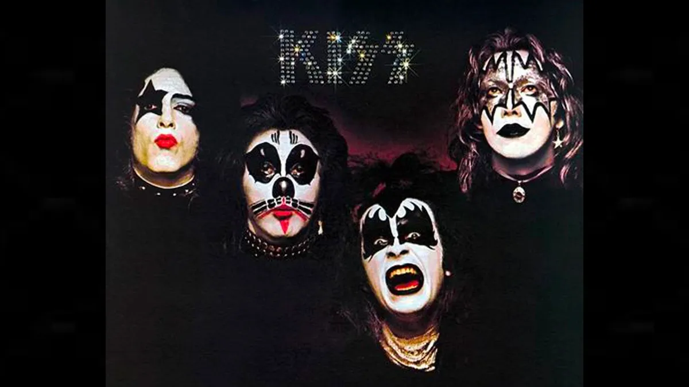
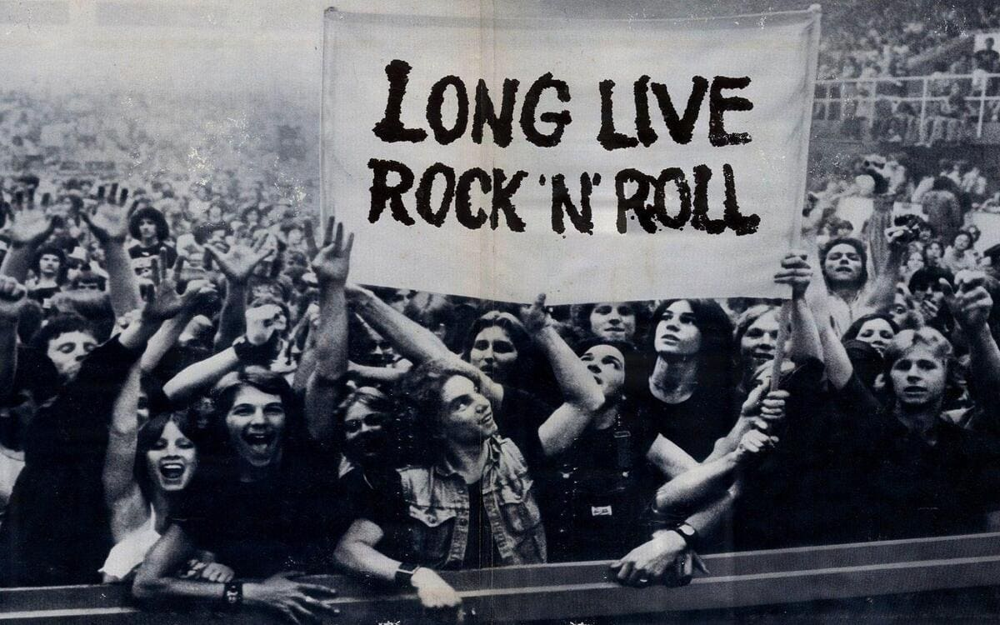

Lore
About Us - Automaton
Forged in the fires of rock and steel, Automaton is the hard-hitting, electrifying band that brings the spirit of the '70s into the modern age. Born from a love of classic rock legends like KISS and AC/DC, we carry the torch for a new generation, blending heavy riffs, larger-than-life personas, and futuristic twists that set us apart.
The story of Automaton begins in a world where rock and robots collide. We are more than a band—we are machines built to rock! Powered by raw energy and an insatiable desire to crank the volume to 11, our music is a mix of thunderous guitar solos, booming basslines, and heart-pounding rhythms that could wake the devil himself.

Lucky 13: The Number of Destiny
We live by the code of Lucky 13, a number that defines our journey. From the start, we believed in the rebellious spirit of hard rock, and 13 has been our charm—our concerts always start at 13 past the hour, and our debut album dropped on the 13th day of the 13th month. Fate or not, the number has followed us, symbolizing defiance, danger, and unstoppable momentum.

The Devil’s Circuit
We channel the Devil’s Circuit, a metaphor for the unstoppable flow of power coursing through our veins—and through every amplifier and speaker we blow up on stage. We sing of freedom, rebellion, and raw human emotion, harnessing the pulse of rock’s darkest and most electric elements.
Welcome to the world of Automaton. We are more than a band—we are the future of rock. Buckle up, because this ride is going straight to the heart of rock ‘n’ roll chaos, where machines meet the music of the gods.